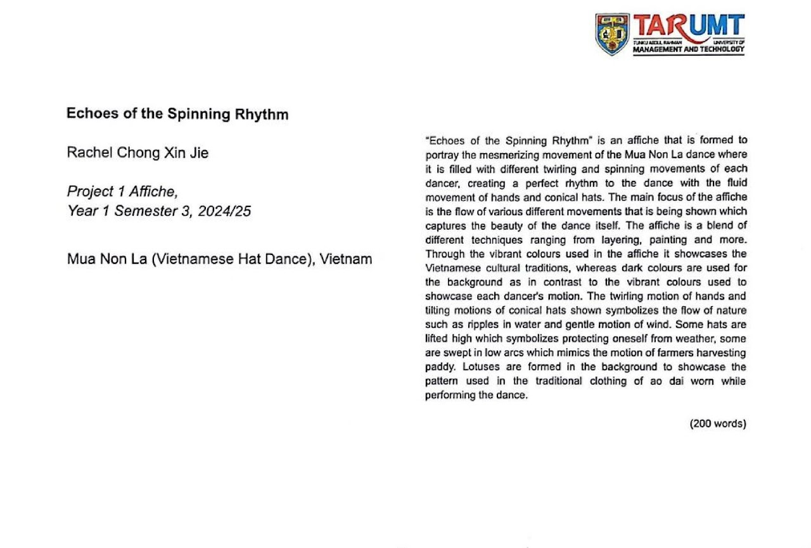
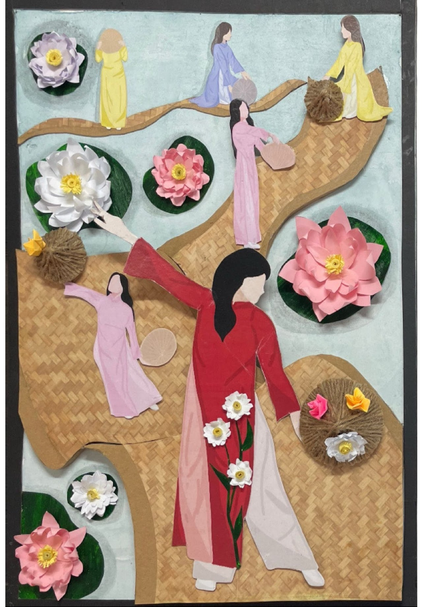
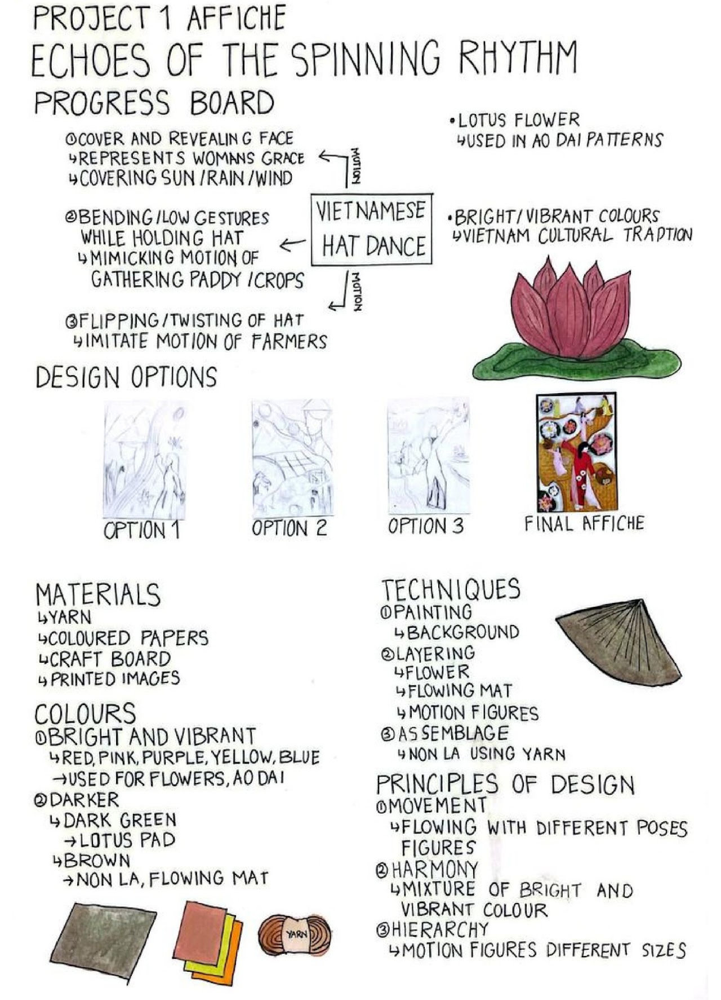

Echoes of the Spinning Rhythm
An affiche (poster) project exploring the rhythm of spinning motion translated into graphic and spatial form.
The poster investigates how the kinetic energy of rotation — the blur, the centrifugal arc, the trace left behind — can be communicated through static composition. Line weight, curvature, and negative space become the primary design vocabulary.
This project develops visual communication skills alongside an architectural understanding of movement, time, and rhythm as spatial qualities.

